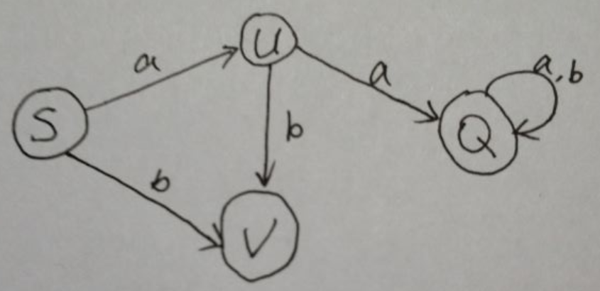

DFA（确定的有穷自动机）
一个确定的有穷自动机M是一个五元组：
M=(K，∑，f，S，Z)
- K是一个有穷集，它的每个元素称为一个状态。
- ∑是一个有穷字母表，它的每一个元素称为一个输入符号，所以也陈∑为输入符号表。
- f是转换函数，是Kx∑->K上的映象。
- S∈K，是唯一的一个初态。
- Z∈K，是一个终态集，终态也称可接受状态或结束状态。
实例代码
实现文法
G[S]: S->aU|bV U->bV|aQ Q->aQ|bQ状态图

- 代码实现
-*- coding: utf-8 -*- #
#@author: chlinlearn
#@createTime: 2019/4/13 14:12
#@fileName: DFA
class DFA():
def __init__(self):
#状态集
self.listEdge = []
#初态
self.S = []
#终态
self.Z = []
#判断是否是终态集
def isZ(self,ch):
for i in range(0,len(self.Z)) :
if self.Z[0] == ch or self.Z[1] == ch:
return True
else:
return False
#输入
def input(self):
self.S = input("请输入开始符：")
self.Z = input("请输入终态集(终集符组成的一个字符串)：")
self.Z = self.Z.split(",")
print("请输入正规文法以exit结尾：")
print("example:S,aZ")
while(True):
list = []
inStr = input()
if inStr=='exit':
break
inStr = inStr.split(',')
# 读取第一个状态集
s = inStr[0]
for i in range(0,len(inStr[1])):
#ch,ns
if len(inStr[1])==2:
c = inStr[1][0]
n = inStr[1][1]
list = [s,c,n]
self.listEdge.append(list)
elif len(inStr[1])==1:
c = inStr[1][0]
list = [s, c, self.Z[0]]
self.listEdge.append(list)
#转换函数
def isNextState(self,s,ch):
for i in range(0,len(self.listEdge)):
if s == self.listEdge[i][0] and ch == self.listEdge[i][1]:
return self.listEdge[i][2]
return
def judgeDFA(self):
print("请输入要判断的字符串:")
while(True):
#获取字母表
str = input()
if '#' in str :
print("程序已退出，欢迎下次使用!")
return
temp = self.S[0]
for i in range(0,len(str)):
if str[i] is 'a':
temp = self.isNextState(temp,'a')
elif str[i] is 'b':
temp = self.isNextState(temp, 'b')
else:
break
if self.isZ(temp):
print("此字符串“属于”该文法！")
else:
print("此字符串“不属于”该文法！")
print("再次判断请输入字符串(退出程序输入#):")
if __name__ == '__main__':
DFA = DFA()
DFA.input()
DFA.judgeDFA()
总结
这是我在课程中的一个实验，代码手写并且可运行，是参照一个java版的代码实现的，加上自己的理解和思路把它以python的形式实现。学习别人好的地方，当然也不能照搬别人，不然能够为己用的东西少之又少。通过不同的编程语言把整个思路在理一遍能够加深自己的理解，并且能够得到一样的运行结果，说明自己的理解是对的。最后也附上对应的java版代码，有需求的童鞋可以参考喔！
欢迎访问我的个人网站www.chlinlearn.cn
附件
java版DFA
import java.util.ArrayList;
import java.util.List;
import java.util.Scanner;
class edge {
char PriorityState;
char ch;
char NextState;
edge(char p,char c, char n){
PriorityState = p;
ch = c;
NextState = n;
}
@Override
public String toString() {
return "edge [PriorityState=" + PriorityState + ", ch=" + ch + ", NextState=" + NextState + "]";
}
}
/**DFA的构造*/
public class DFA {
static List<edge> listEdge = new ArrayList<edge>();//状态集
//static HashMap<edge, Character> mapEdge = new HashMap<>();
static String S;//初态集
static String Z;//终态集
//flag is here
static boolean judeZ(char ch){
for(int j=0; j<Z.length(); j++){
if(Z.charAt(j)==ch) return true;
}
return false;
}
static void input() {
Scanner in = new Scanner(System.in);
String instr = null;
String subStr[] = null;
System.out.println("请输入开始符：");
S = in.next();
System.out.println("请输入终态集(终集符组成的一个字符串)：");
Z = in.next();
System.out.println("请输入正规文法以end结尾(形式如下图)：");
System.out.println("----------");
System.out.println("| S-aU |");
System.out.println("| S-bV |");
System.out.println("| U-bV |");
System.out.println("| .... |");
System.out.println("| end |");
System.out.println("----------");
while(in.hasNext()){
instr = in.next();
if("end".equals(instr))
break;
subStr = instr.split("-|\\|");//连字符
System.out.println("subStr:"+subStr);
String s = subStr[0];//读取一行f(转换函数)
System.out.println(s);
for(int i=1; i<subStr.length; i++){
edge e = null;
System.out.println(subStr[1]);
if(subStr[i].length()==2){
char c = subStr[i].charAt(0);//字母表
char n = subStr[i].charAt(1);//状态集
listEdge.add(new edge(s.charAt(0),c,n));//f(S,a)=U
}
if(subStr[i].length()==1){
char c = subStr[i].charAt(0);
listEdge.add(new edge(s.charAt(0),c,Z.charAt(0)));
}
}
}
}
static char judeNextState(char s,char ch){
for(int i=0; i<listEdge.size(); i++){
if(s==listEdge.get(i).PriorityState && ch==listEdge.get(i).ch){
return listEdge.get(i).NextState;
}
}
return '0';
}
static void judeDFA(){
Scanner in = new Scanner(System.in);
System.out.println("请输入要判断的字符串:");
while(in.hasNext()){
String str = in.next();
if(str.equals("#")){
System.out.println("程序已退出，欢迎下次使用!");
return;
}
char temp = S.charAt(0);
int i=0;
//System.out.println(temp+" "+mapEdge.get(e));
for(; i<str.length(); i++){
//System.out.println("temp="+temp);
if(str.charAt(i)=='a'){
temp = judeNextState(temp, 'a');
}
else if(str.charAt(i)=='b'){
temp = judeNextState(temp, 'b');
}
else break;
}
//flag is here
if(i>=str.length() && judeZ(temp)) System.out.println("此字符串“属于”该文法！");
else System.out.println("此字符串“不属于”该文法！");
System.out.println("再次判断请输入字符串(退出程序输入#):");
}
}
/*main*/
public static void main(String[] args) {
// TODO Auto-generated method stub
DFA.input();
DFA.judeDFA();
}
}